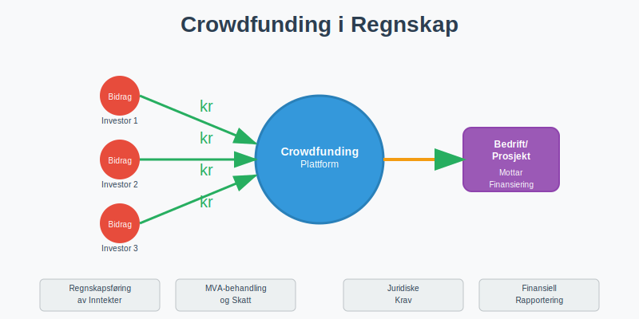
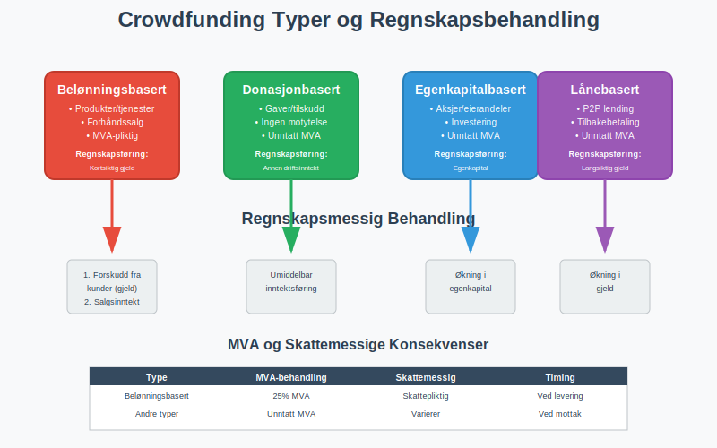
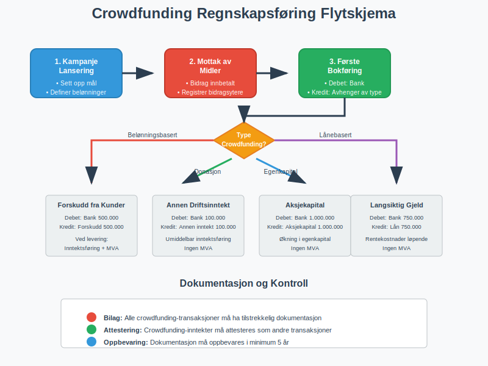
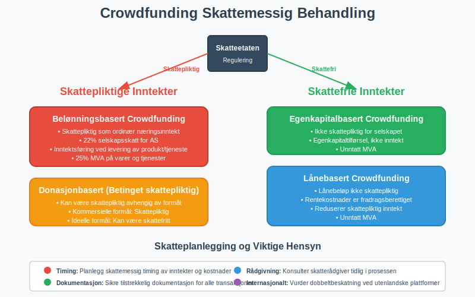
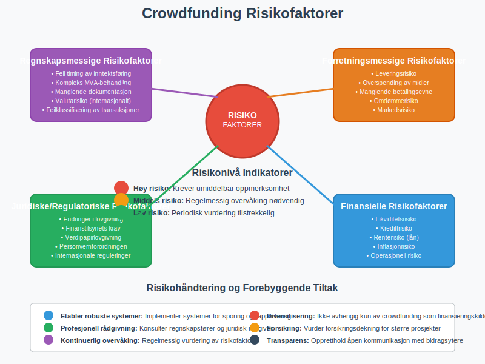
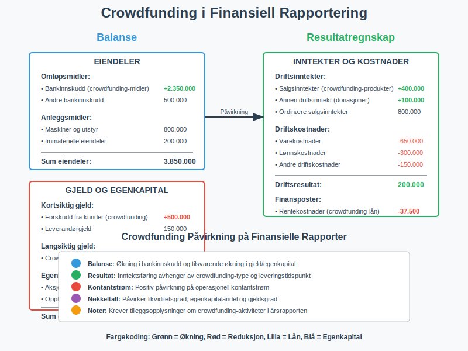

Crowdfunding er en moderne finansieringsmetode hvor mange personer bidrar med små beløp for å finansiere et prosjekt, produkt eller bedrift. Som en del av det bredere konseptet crowdsourcing, representerer crowdfunding en spesifikk form for folkefinansiering. Fra et regnskapsperspektiv bringer crowdfunding unike utfordringer knyttet til regnskapsføring, skattemessig behandling og juridiske krav. For norske bedrifter som benytter crowdfunding, er det essensielt å forstå hvordan disse midlene skal behandles i henhold til bokføringsloven og gjeldende regnskapsregler.

Typer Crowdfunding og Regnskapsmessig Behandling
Crowdfunding kan deles inn i fire hovedkategorier, hver med sine egne regnskapsmessige implikasjoner og krav til dokumentasjon.

1. Belønningsbasert Crowdfunding (Reward-based)
Dette er den mest vanlige formen for crowdfunding, hvor bidragsytere mottar produkter eller tjenester som takk for sitt bidrag. Fra et regnskapsperspektiv behandles dette som forhåndssalg eller forskuddsbetaling.
Regnskapsføring:
- Innbetalte midler bokføres som kortsiktig gjeld (forskudd fra kunder)
- Inntektsføring skjer først når produktet/tjenesten leveres
- MVA-behandling følger vanlige regler for salg av varer/tjenester
2. Donasjonbasert Crowdfunding (Donation-based)
Her gir bidragsytere penger uten å forvente noe tilbake. Dette behandles som gave eller tilskudd i regnskapet.
Regnskapsføring:
- Inntektsføres umiddelbart ved mottak
- Vanligvis ikke MVA-pliktig (gaver er unntatt MVA)
- Kan være skattepliktig inntekt for mottaker
3. Egenkapitalbasert Crowdfunding (Equity-based)
Investorer kjøper aksjer eller eierandeler i bedriften. Dette behandles som aksjekapital eller egenkapitaltilførsel og er en form for egenfinansiering.
Regnskapsføring:
- Økning i egenkapital
- Må følge aksjeloven og krav til aksjeregistrering
- Ikke MVA-pliktig
4. Lånebasert Crowdfunding (Debt-based/P2P Lending)
Bidragsytere låner penger til bedriften med forventning om tilbakebetaling med renter. Dette behandles som langsiktig gjeld. Denne formen for crowdfunding er også kjent som crowdlending eller peer-to-peer utlån.
Regnskapsføring:
- Bokføres som gjeld i balansen
- Rentekostnader kostnadsføres løpende
- Ikke MVA-pliktig
Regnskapsføring av Crowdfunding-transaksjoner
Korrekt regnskapsføring av crowdfunding-aktiviteter krever forståelse av når og hvordan ulike transaksjoner skal behandles. Tabellen nedenfor viser de vanligste scenarioene:
| Crowdfunding Type | Bokføring ved Mottak | Bokføring ved Levering | MVA-behandling |
|---|---|---|---|
| Belønningsbasert | Kortsiktig gjeld (Forskudd fra kunder) | Salgsinntekt + MVA | 25% MVA på varer/tjenester |
| Donasjonbasert | Annen driftsinntekt | - | Unntatt MVA |
| Egenkapitalbasert | Egenkapital (Aksjekapital) | - | Unntatt MVA |
| Lånebasert | Langsiktig gjeld | Rentekostnad (løpende) | Unntatt MVA |

Praktisk Eksempel: Belønningsbasert Crowdfunding
La oss se på et konkret eksempel hvor en bedrift samler inn 500.000 kr gjennom belønningsbasert crowdfunding for å produsere et nytt produkt:
Fase 1 - Mottak av midler:
Debet: Bank 500.000
Kredit: Forskudd fra kunder 500.000
Fase 2 - Levering av produkter (inkl. 25% MVA):
Debet: Forskudd fra kunder 500.000
Kredit: Salgsinntekt 400.000
Kredit: Utgående MVA 100.000
Skattemessige Konsekvenser
Skattemessig behandling av crowdfunding-inntekter avhenger av type crowdfunding og bedriftens organisasjonsform. For aksjeselskaper gjelder følgende hovedregler:
Skattepliktige Inntekter
- Belønningsbasert crowdfunding: Skattepliktig som ordinær næringsinntekt
- Donasjonbasert crowdfunding: Kan være skattepliktig, avhenger av formål og struktur
- Lånebasert crowdfunding: Lånebeløpet er ikke skattepliktig, men rentekostnader er fradragsberettiget (se crowdlending for detaljert informasjon)
Skattefrie Inntekter
- Egenkapitalbasert crowdfunding: Ikke skattepliktig for selskapet (egenkapitaltilførsel)
- Offentlige tilskudd: Ofte skattefrie hvis de oppfyller spesifikke kriterier

Juridiske Krav og Regulering
Crowdfunding i Norge er regulert av flere lover og forskrifter, avhengig av type crowdfunding:
Finanstilsynets Regulering
- Egenkapitalbasert crowdfunding: Krever tillatelse fra Finanstilsynet for profesjonelle aktører
- Lånebasert crowdfunding: Omfattes av kredittilsynsloven
- Verdipapirlovgivning: Gjelder for egenkapitalbasert crowdfunding over visse terskelverdier
Bokføringsplikt og Dokumentasjon
Alle crowdfunding-transaksjoner må dokumenteres i henhold til bokføringsforskriften:
- Bilag: Alle transaksjoner må ha tilstrekkelig dokumentasjon
- Attestering: Crowdfunding-inntekter må attesteres som andre forretningstransaksjoner
- Oppbevaring: Dokumentasjon må oppbevares i minimum 5 år
Utfordringer og Risikofaktorer
Crowdfunding bringer flere regnskapsmessige og forretningsmessige utfordringer som bedrifter må være oppmerksomme på:
Regnskapsmessige Utfordringer
- Timing av inntektsføring: Når skal crowdfunding-midler inntektsføres?
- Valutarisiko: Internasjonale crowdfunding-kampanjer kan medføre valutaeksponering
- Kompleks MVA-behandling: Ulike crowdfunding-typer har forskjellige MVA-implikasjoner
Forretningsmessige Risikofaktorer
- Leveringsrisiko: Manglende evne til å levere lovede produkter/tjenester
- Betalingsevne: Crowdfunding-midler må forvaltes forsvarlig
- Regulatorisk risiko: Endringer i lovgivning kan påvirke crowdfunding-aktiviteter

Beste Praksis for Crowdfunding-regnskap
For å sikre korrekt regnskapsføring og overholdelse av juridiske krav, anbefales følgende beste praksis:
1. Etabler Klare Rutiner
- Separat bankkonto: Bruk egen konto for crowdfunding-midler
- Detaljert dokumentasjon: Registrer alle bidragsytere og deres bidrag
- Regelmessig avstemming: Avstem crowdfunding-kontoer månedlig
2. Implementer Internkontroll
- Godkjenningsprosesser: Etabler klare prosedyrer for bruk av crowdfunding-midler
- Rapportering: Lag regelmessige rapporter til interessenter
- Revisjon: Vurder ekstern revisjon for større crowdfunding-prosjekter
3. Skatteplanlegging
- Tidlig rådgivning: Konsulter regnskapsfører eller skatterådgiver tidlig i prosessen
- Dokumentasjon: Sikre tilstrekkelig dokumentasjon for skattemessige formål
- Periodisering: Planlegg skattemessig timing av inntekter og kostnader
Crowdfunding og Finansiell Rapportering
Crowdfunding-aktiviteter må reflekteres korrekt i bedriftens finansielle rapporter. Dette inkluderer:
Balanse
- Eiendeler: Crowdfunding-midler øker bankinnskudd
- Gjeld: Forskudd fra kunder (belønningsbasert) eller lån (lånebasert)
- Egenkapital: Økning ved egenkapitalbasert crowdfunding
Resultatregnskap
- Inntekter: Crowdfunding-inntekter klassifiseres etter type
- Kostnader: Kostnader knyttet til crowdfunding-kampanjer
- Finanskostnader: Rentekostnader på crowdfunding-lån

Internasjonale Aspekter
For norske bedrifter som benytter internasjonale crowdfunding-plattformer, oppstår ytterligere kompleksiteter:
Valutahåndtering
- Valutaomregning: Crowdfunding-midler i utenlandsk valuta må omregnes til NOK
- Valutarisiko: Svingninger i valutakurser kan påvirke verdien av midlene
- Sikring: Vurder valutasikring for større beløp
Skattemessige Implikasjoner
- Dobbeltbeskatning: Risiko for beskatning i både Norge og utlandet
- Kildeskatt: Enkelte land kan kreve kildeskatt på crowdfunding-inntekter
- Rapporteringsplikt: Internasjonale transaksjoner kan utløse særskilte rapporteringskrav
Fremtidige Utviklingstrekk
Crowdfunding-markedet utvikler seg raskt, og nye reguleringer og teknologier påvirker regnskapsmessig behandling:
Regulatoriske Endringer
- EU-regulering: Nye EU-regler for crowdfunding kan påvirke norske aktører
- Digitale valutaer: Crowdfunding med kryptovalutaer skaper nye regnskapsmessige utfordringer
- Automatisering: Økt bruk av automatiserte regnskapsløsninger for crowdfunding
Teknologiske Innovasjoner
- Blockchain: Kan forbedre transparens og sporbarhet i crowdfunding
- AI og maskinlæring: Automatisering av regnskapsføring og risikohåndtering
- Integrerte plattformer: Bedre integrasjon mellom crowdfunding-plattformer og regnskapssystemer
Konklusjon
Crowdfunding representerer en viktig finansieringsmetode for moderne bedrifter, men krever grundig forståelse av regnskapsmessige og juridiske implikasjoner. Korrekt behandling av crowdfunding-transaksjoner er essensielt for å opprettholde regnskapsmessig integritet og overholde gjeldende lovgivning.
For oppstartsselskaper kan det også være aktuelt å vurdere inkubatorer som en alternativ eller komplementær finansieringsmetode, spesielt i tidlige utviklingsfaser hvor crowdfunding kan kombineres med mentorskap og nettverkstilgang.
Bedrifter som vurderer crowdfunding bør:
- Planlegge grundig: Forstå regnskapsmessige konsekvenser før kampanjestart
- Søke profesjonell rådgivning: Konsulter regnskapsfører og juridisk rådgiver
- Etablere robuste systemer: Implementer systemer for sporing og rapportering
- Opprettholde transparens: Kommuniser åpent med bidragsytere og interessenter
Med riktig planlegging og implementering kan crowdfunding være en verdifull finansieringskilde som styrker bedriftens arbeidskapital og vekstmuligheter. Bedrifter bør også vurdere andre finansieringsalternativer som egenfinansiering for å finne den optimale kapitalstrukturen, samtidig som alle regnskapsmessige og juridiske krav oppfylles.